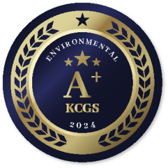

home > ESG > ESG 경영
ESG
ESG 경영
environmental, social and corporate governance지속 가능한 미래를 향한 길, 코오롱글로벌이 열어갑니다.
코오롱글로벌은 기업의 사회적 가치 추구가 회사와 우리 사회 전체의 지속 가능한 성장을 위해 필요하다는 것을 명확히 인지하고 있습니다. 경영 전반에 걸쳐 ESG에 기반한 정책과 전략을 수립 및 운영하고, 사회적 요구 이상의 철저한 관리와 투명한 정보 공개를 시행함으로써 건강한 미래 사회 창조에 기여하겠습니다.
ESG 전략
환경(E), 사회(S), 지배구조(G) 각 영역의 전략 방향과 목표 등을 담은 ESG 경영전략을 수립하고, ESG 경영을 회사의 비전 달성을 위한 최우선 과제로 실천하고 있습니다. 미래 세대를 위해 환경 친화 경영을 고도화하고, 구성원ᆞ고객ᆞ협력사ᆞ지역 사회 등 모든 이해관계자와 동반성장을 할 수 있도록 사회적 책임을 강화하며, 공정하고 투명한 경영 환경을 조성함으로써 지속 가능한 성장동력을 확보해 나가겠습니다.
더 나은 미래로
We connect
the Future
親환경 & 先책임 경영, 투명한 지배구조로
지속가능한 성장 동력 확보
환경
Environment
-
환경 친화 경영 고도화
- 환경 경영 정책 고도화
- 환경 에너지 관리 효율화
- 환경 성과 확대
- 지역 사회 환경 보호
사회적 책임
Social
-
윤리&공헌 경영 확대
- 인권 · 노동 중시 경영
- 안전 보건 철저
- 윤리 준법 강화
- 사회공헌 활성화
지배구조
Governance
-
기업지배구조 투명화
- 기업지배구조 고도화
- 주주 권익 확대
- ESG 경영 안착
ESG 평가
-
ESG통합
-

환경 부문
-
사회 부문
-
지배구조 부문
평가기관 | 한국ESG기준원 (KCGS)